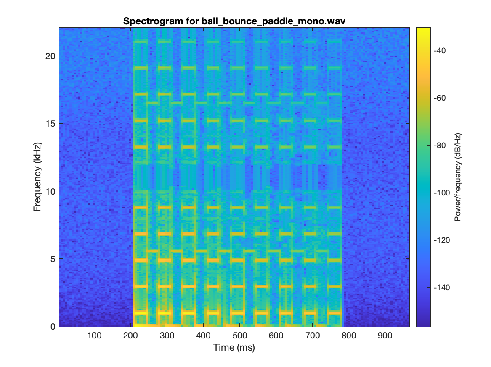
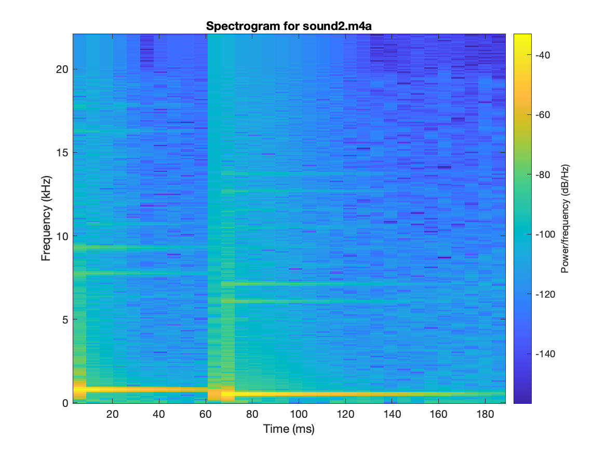

As part of Iowa State's Computational Perception course, this assignment primarily focuses
on implementing the Discrete, the Inverse Discrete, the Fast, and the Inverse Fast Fourier Transforms.
Following their implementation, the FFT and IFFT were used to construct a spectrogram of a few audio clips.
List of Audio Libraries and References
The following list of C / C++ libraries and references for audio processing is provided for your convenience only.
You are not required to use any of these libraries / references for this homework.
-
Keep It Simple, Stupid FFT library.
-
Audacity. Useful for analyzing raw audio (waves) and modifying audio files (ie. stereo <--> mono).
Part 1a: Slow DFT
Implement the Discrete Fourier Transform (DFT) in C, C++, MATLAB, Java, or Python. Implement the slow version that multiplies the transform matrix by the input vector in O(N2) time. Your code should support input vectors of size up to 1024.
Part 1b: Slow IDFT
Implement the Inverse Discrete Fourier Transform (IDFT) in C, C++, MATLAB, Java, or Python. Implement the slow version that multiplies the transform matrix by the input vector in O(N2) time. Your code should support input vectors of size up to 1024.
Part 2a: FFT
Implement the Fast Fourier Transform (FFT) in C, C++, MATLAB, Java, or Python. Implement the fast version that uses recursion and runs in O(n log2 n) time. Note that you are not allowed to use MATLAB's implementation nor any other existing library for this problem. Your code should support input vectors of size up to 1024. Use your code from Part 1a to cross-check your implementation.
Part 2b: IFFT
Implement the Inverse Fast Fourier Transform (IFFT) in C, C++, MATLAB, Java, or Python. Implement the fast version that uses recursion and runs in O(n log2 n) time. Note that you are not allowed to use MATLAB's implementation nor any other existing library for this problem. Your code should support input vectors of size up to 1024. Use your code from Part 1b to cross-check your implementation.
Part 3a: FFT check
Using your implementation from Part 2a, compute the Discrete Fourier Transform of the following vector:
[0, 0.7071, 1, 0.7071, 0, -0.7071, -1, -0.7071]
Note: you may want to use sqrt(2)/2 instead of 0.7071.
[0 + 0i, 0 + -4i, 0 + 0i, 0 + 0i, 0 + 0i, -0 + 0i, 0 + 0i, -0 + 4i]
Compare your output with the output generated by MATLAB's fft() method for the same vector 'x'. Include the result below, and point out any discrepancies. You may also use one of the FFT libraries above, if you choose.
[0.0000 + 0.0000i 0.0000 - 4.0000i 0.0000 + 0.0000i 0.0000 + 0.0000i 0.0000 + 0.0000i 0.0000 - 0.0000i 0.0000 + 0.0000i 0.0000 + 4.0000i]
There are two primary discrepancies. The first is that my FFT produces complex numbers where some of the real constants equal to 0 are positive and others are negative; however, the MATLAB implementation produces purely positive signed zeros. The second is that my FFT is has higher precision (less rounding) the MATLAB implementation. While MATLAB shows 4 decimal digits of precision and mine shows 0, this is simply a display discrepency. If I use the values of 0.7071 in my FFT, then my resulting vector shows decimal points as the constants are not integers. This is due to 0.7071 being a 4 decimal digit rounding of sqrt(2)/2. However, MATLAB does not change for either input because it has a lower rounding threshold.
Part 3b: IFFT check
Using your implementation from Part 2b, compute the inverse Discrete Fourier Transform of the following vector:
[0, -4i, 0, 0, 0, 0, 0, 4i]
[0 + 0i, 0.707107 + -0i, 1 + -0i, 0.707107 + -0i, 0 + 0i, -0.707107 + 0i, -1 + 0i, -0.707107 + 0i]
Compare your output with the output generated by MATLAB's ifft() method for the same vector 'X'. Include the result below, and point out any discrepancies. You may also use one of the IFFT libraries above, if you choose.
[0 0.7071 1.0000 0.7071 0 -0.7071 -1.0000 -0.7071]
There are three primary discrepancies where two of them are the same as Part 3a. The first is that my IFFT produces real numbers where some of them which are equal to 0 are positive and others are negative; however, the MATLAB implementation produces purely positive signed zeros. The second is that my IFFT is has higher precision (less rounding) the MATLAB implementation. While MATLAB shows 4 decimal digits, mine has 6. The third is that my IFFT returns numbers in the form of complex number. While the imaginary constants for my complex numbers are all 0, they are still formatted as complex numbers.
Part 4
Using any FFT and IFFT implementation, compute and plot the spectrograms for the following 3 audio files. In case you are curious, these audio snippets came from a video game.
| Audio Data | Spectrogram |
|---|---|
|  | |
Part 5
Repeat what you did in part 4, but now process three audio files that you recorded while playing your favorite game. Describe how you recorded the audio and what parameters were used (e.g., sampling frequency, duration). Also, describe the parameters that you used to compute the spectrograms (you can put this in the comments for your code). Modify the HTML template so that you files are linked and your spectrograms are show to the right of each audio file.
| Audio Data | Spectrogram |
|---|---|
|  | |
Part 6
Synthesize the dial tones for three different area codes (only the first 3 digits of a phone number). Save these as audio files and link to them in the HTML template. Then plot the spectrograms for each audio file. See the examples posted here.
| Audio Data | Spectrogram |
|---|---|
Extra Credit
Non-Recursive FFT
Implement a non-recursive version of the Fast Fourier Transform (FFT) in C, C++, MATLAB, Java, or Python. This is the iterative version of the algorithm that still runs in O(N log2N) time, but does not use recursion. Your code should support input vectors of size up to 1024. Once again, this must be your own implementation. Run you code on the vector from part 3a and report the result.
[0 + 0i, 0 + -4i, 0 + 0i, 0 + 0i, 0 + 0i, -0 + 0i, 0 + 0i, -0 + 4i]
Included Files
Here are the included files made for many of the above problems. These files house common functions used across problems.